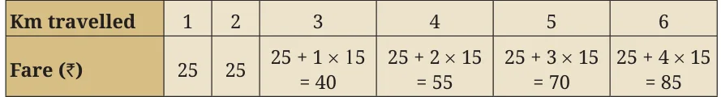
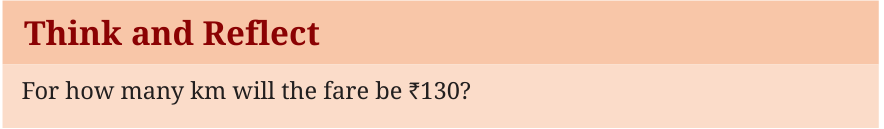

<!DOCTYPE html>
<html lang="en">
<head>
<meta charset="UTF-8">
<meta name="viewport" content="width=device-width,initial-scale=1">
<title>Exercise 2.3 — Introduction to Linear Polynomials</title>
<meta name="description" content="Class 9 Mathematics · Introduction to Linear Polynomials · Exercise 2.3">
<link rel="icon" href="data:image/svg+xml,<svg xmlns='http://www.w3.org/2000/svg' viewBox='0 0 100 100'><text y='.9em' font-size='90'>📘</text></svg>">
<link rel="stylesheet" href="../../../assets/book.css">
<link rel="stylesheet" href="https://cdn.jsdelivr.net/npm/katex@0.16.11/dist/katex.min.css" crossorigin="anonymous">
</head>
<body>
<header class="topbar">
<div class="topbar-in">
  <div class="crumb">
    <span class="c1"><a href="../../../index.html">Library</a> · <a href="../../index.html">Class 9 Mathematics</a></span>
    <span class="c2">Introduction to Linear Polynomials · Exercise 2.3</span>
  </div>
  <a class="tb-btn" data-nav="prev" href="../../02-introduction-to-linear-polynomials/05-exploring-linear-patterns-2.3/index.html" title="2.3 Exploring linear patterns">←</a>
  <details class="drawer"><summary class="tb-btn" title="Sections in this chapter">☰</summary>
<div class="drawer-panel"><div class="dh">Introduction to Linear Polynomials</div><a href="../01-introduction-2.1/index.html">2.1 Introduction</a><a href="../02-exercise-2.1/index.html">Exercise 2.1</a><a href="../03-linear-polynomials-2.2/index.html">2.2 Linear Polynomials</a><a href="../04-exercise-2.2/index.html">Exercise 2.2</a><a href="../05-exploring-linear-patterns-2.3/index.html">2.3 Exploring linear patterns</a><a href="../06-exercise-2.3/index.html" aria-current="page">Exercise 2.3</a><a href="../07-linear-growth-and-linear-decay-2.4/index.html">2.4 Linear growth and linear decay</a><a href="../08-exercise-2.4/index.html">Exercise 2.4</a><a href="../09-linear-relationships-2.5/index.html">2.5 Linear Relationships</a><a href="../10-exercise-2.5/index.html">Exercise 2.5</a><a href="../11-visualising-linear-relationships-2.6/index.html">2.6 Visualising linear relationships</a><a href="../12-exercise-2.6/index.html">Exercise 2.6</a></div></details>
  <a class="tb-btn" data-nav="next" href="../../02-introduction-to-linear-polynomials/07-linear-growth-and-linear-decay-2.4/index.html" title="2.4 Linear growth and linear decay">→</a>
  <button class="tb-btn" data-theme-toggle title="Toggle light / dark" aria-label="Toggle light or dark theme">◐</button>
</div>
<div class="progress"><span style="width:13.2%"></span></div>
</header>
<main class="wrap">
<div class="sec-head">
  <p class="eyebrow"><a href="../index.html">Chapter 2 · Introduction to Linear Polynomials</a></p>
  <h1>Exercise 2.3</h1>
  <p class="sec-meta">Textbook pages 8–9 · 6 figures</p>
</div>
<article class="prose">
<p>Observe that the amount left on the \(n^{th}\) day will be `(100 \(- 5n)\). Therefore, on the 12th day the amount left will be `(100 \(- 12 \times 5) =\) `40.</p>
<figure class="fig wide"></figure>
<p>Example 8: An auto-rikshaw fare starts at `25 and remains the same for the initial 2 km. Then it increases by `15 per km. What will be the fare for a travel of 10 km? For the initial 2 km, the fare is `25. For every kilometre (km) thereafter, the fare will increase by `15. Therefore, the total fare for a travel of 10 km will be `25 \(+ 15 \times 8 =\) `145.</p>
<figure class="fig table-fig wide"></figure>
<p>Observe that the total fare for a travel of n km will be `25 \(+ 15 \times\) (n \(- 2) = 15n - 5\), when \(n \ge 2\). Here, the fare for a specific distance covered is a function of the distance n km.</p>
<figure class="fig wide"></figure>
<p>Note that in all the above examples, the n term is a linear expression in n. A linear pattern is a sequence of numbers where the difference between two consecutive terms is constant. We will learn more about linear patterns in the chapter on Sequences and Progressions.</p>
<aside class="sidenote"><p>th</p></aside>
<figure class="fig"></figure>
<p>Solve the following:</p>
<ul class="qlist">
<li><span class="mk">1.</span><span class="lt">A student has `500 in her savings bank account. She gets `150 every</span></li>
</ul>
<p>month as pocket money. How much money will she have at the end of every month from the second month onwards? Find a ­linear</p>
<p>expression to represent the amount she will have in the n month.</p>
<aside class="sidenote"><p>th</p></aside>
<ul class="qlist">
<li><span class="mk">2.</span><span class="lt">A rally starts with 120 members. Each hour, 9 members drop out of</span></li>
</ul>
<p>the group. How many members will remain after 1, 2, 3, … hours? Find a linear expression to represent the number of members at</p>
<p>the end of the n hour.</p>
<p class="lead">th</p>
<ul class="qlist">
<li><span class="mk">3.</span><span class="lt">Suppose the length of a rectangle is 13 cm. Find the area if the</span></li>
</ul>
<p>breadth is (i) 12 cm, (ii) 10 cm, (iii) 8 cm. Find the linear pattern representing the area of the rectangle.</p>
<ul class="qlist">
<li><span class="mk">4.</span><span class="lt">Suppose the length of a rectangular box is 7 cm and breadth</span></li>
</ul>
<p>is 11 cm. Find the volume if the height is (i) 5 cm, (ii) 9 cm,</p>
<ul class="qlist">
<li><span class="mk">(iii)</span><span class="lt">13 cm. Find the linear pattern representing the volume of the</span></li>
</ul>
<p>rectangular box.</p>
<ul class="qlist">
<li><span class="mk">5.</span><span class="lt">Sarita is reading a book of 500 pages. She reads 20 pages every</span></li>
</ul>
<p>day. How many pages will be left after 15 days? Express this as a linear pattern.</p>
</article>
<nav class="pager"><a class="" data-nav="prev" href="../../02-introduction-to-linear-polynomials/05-exploring-linear-patterns-2.3/index.html"><span class="dir">← Previous</span><span class="t">2.3 Exploring linear patterns</span><span class="ch">Introduction to Linear Polynomials</span></a><a class="nx" data-nav="next" href="../../02-introduction-to-linear-polynomials/07-linear-growth-and-linear-decay-2.4/index.html"><span class="dir">Next →</span><span class="t">2.4 Linear growth and linear decay</span><span class="ch">Introduction to Linear Polynomials</span></a></nav>
</main><footer class="site">Generated from the source textbook PDFs · text, figures and exercises belong to their respective publishers.</footer><script defer src="https://cdn.jsdelivr.net/npm/katex@0.16.11/dist/katex.min.js" crossorigin="anonymous"></script>
<script defer src="https://cdn.jsdelivr.net/npm/katex@0.16.11/dist/contrib/auto-render.min.js" crossorigin="anonymous"
  onload="renderMathInElement(document.body,{delimiters:[
    {left:'\\(',right:'\\)',display:false},
    {left:'$$',right:'$$',display:true},
    {left:'\\[',right:'\\]',display:true}],throwOnError:false,ignoredTags:['script','noscript','style','textarea','pre','code']})"></script>
<script src="../../../assets/book.js"></script>
<script defer src="../../../../assets/search.js?v=1789782769"></script>
<script defer src="../../../../assets/screenshot.js?v=2"></script>
</body>
</html>
